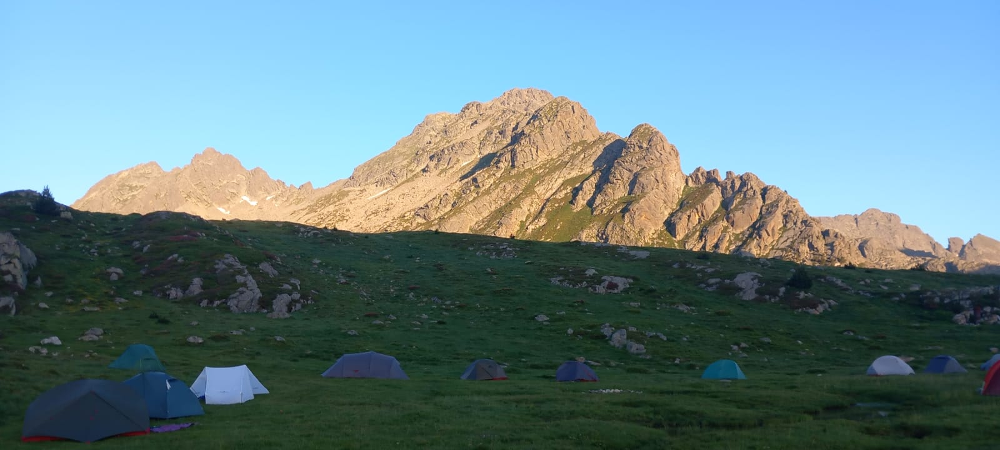
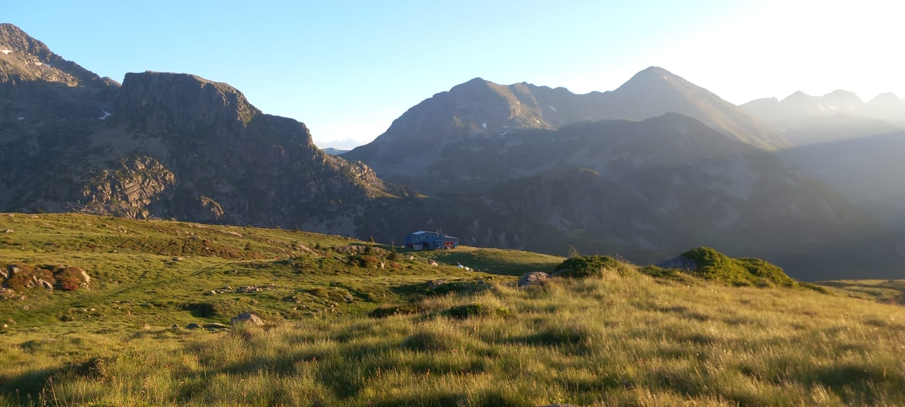

Randonnées en montagne dans les Pyrénées et les Vosges avec le club 7Randos, dont un trek en bivouac sur 2 jours près d’Andorre avec un ami : 35 km · 2 500 m D+ / 2 500 m D-.

Camp de bivouac en altitude près d’Andorre — fin de journée dans les Pyrénées
Descente vers un lac d’altitude (35 km · ±2 500 m de dénivelé)Installation du bivouac sur les hauteurs

Lumière matinale sur les sommets des Pyrénées
Panorama de montagne avec 7Randos
Plein air
Vélo
Sorties VTT et balades sur les chemins des Vosges et d’Occitanie.